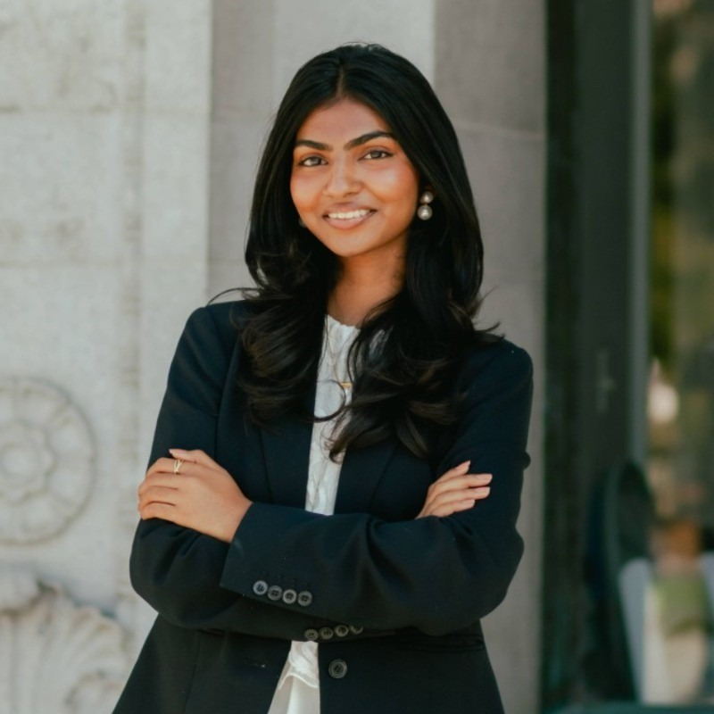

About Me
I do machine learning research at Berkeley AI Research (BAIR) in the EMBER Centre, advised by Jonas Frey and Siming He in Prof. Jitendra Malik's and Prof. Claire Tomlin's labs. I work on vision-language navigation: teaching robots to search for objects when they're on a time budget.
My first-author paper, Racing the Clock, won the Best Paper Award at the IROS 2026 Workshop on Intelligent Information Gathering. It asks how an action budget should shape where a VLN policy searches, and what kind of expert demonstrations actually teach budget-conditioned search. The agent sees only RGB history, a target category, and a remaining-budget countdown, and has to find as many distinct instances of the target as it can before time runs out.
We compare two finite-budget Bellman experts: an object-level expert that routes among targets using the full map, and a room-level expert that only reasons about unexplored rooms through doorway evidence and cross-scene priors. We distill both into Uni-NaVid. Despite its lower expert return, room-level supervision gives the best student at every budget we tested. At 2000 steps it finds 72.7% of reachable targets, versus 68.5% for greedy-frontier supervision, 65.5% for object-level supervision, and 44.8% for the pretrained VLN. The takeaway: an expert's return doesn't predict how well it teaches a partially-observing student.
The work is supported by an NSF ACCESS compute grant (~$150k), and an extended version is under review at ICRA 2027.
Publications
-
Racing the Clock: Teaching VLNs Budget-Conditioned Object Search
[pdf]
IROS Workshop on Intelligent Information Gathering, 2026 (Best Paper Award)
Some past work
- Best Paper Award, IROS 2026 Workshop on Intelligent Information Gathering; NSF ACCESS compute grant (~$150k).
- Relling Systems (2025–26): probed π0-FAST/π0.5 across 255 episodes and 36 layers; LoRA fine-tuned both on in-house demos.
- Squarepoint Capital (2025): variance swap replication under real-world vol smiles; highest PnL in the intern class.
- Engelhart Trading (2024): SABR Monte Carlo pricer for natural gas calendar spread options; power price tail-risk monitor.
- Handle.com (2024): LLM-powered scrapers and APIs for property owner and contractor verification.
- LinkedIn (2024): Java tool on the ML team automating OpenAPI client integrations with 7 providers.
- Fourth Down: live event-trading dashboard for college football prediction markets with sub-second updates.